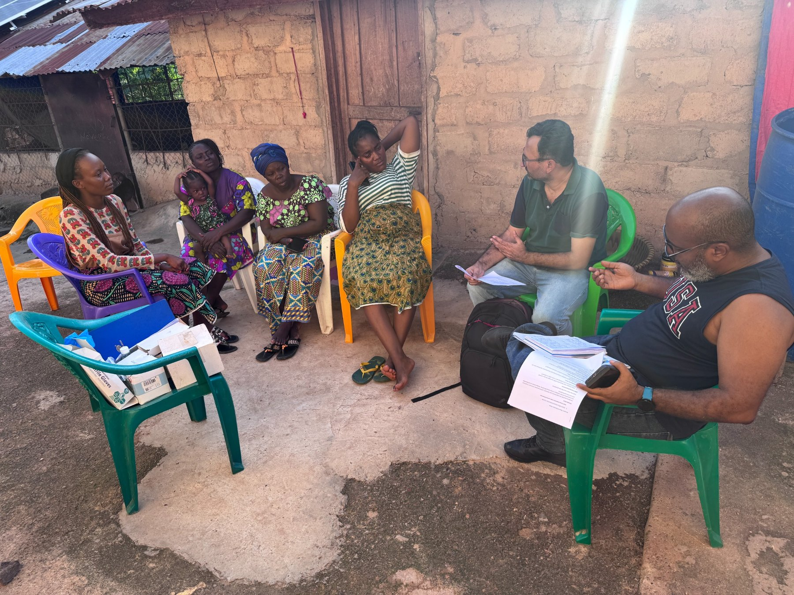
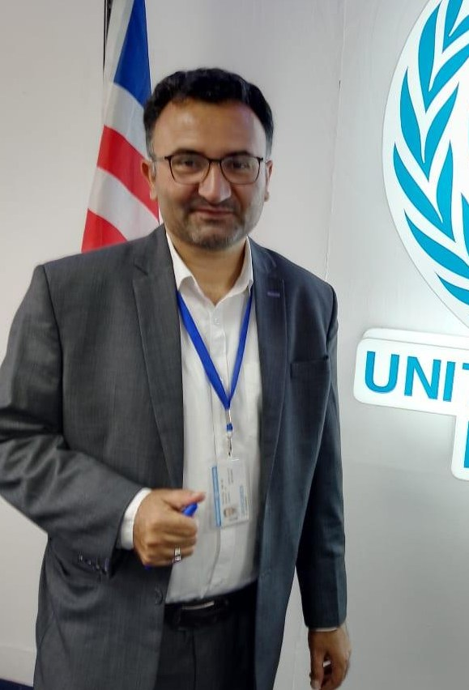
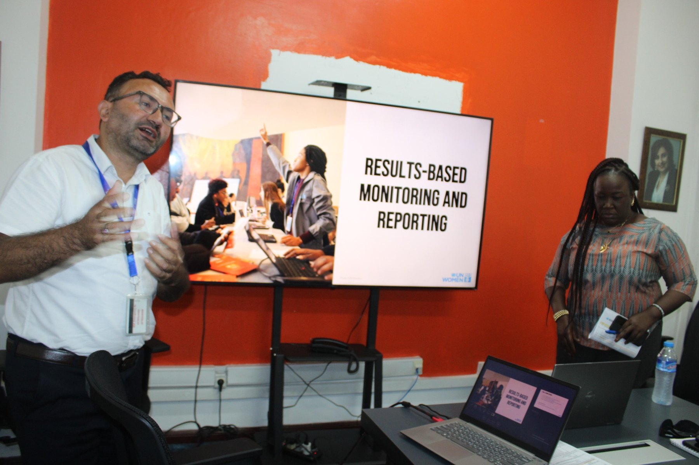
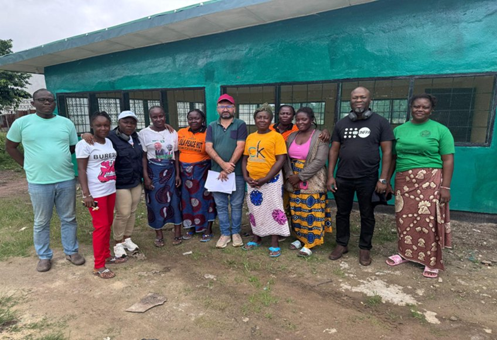
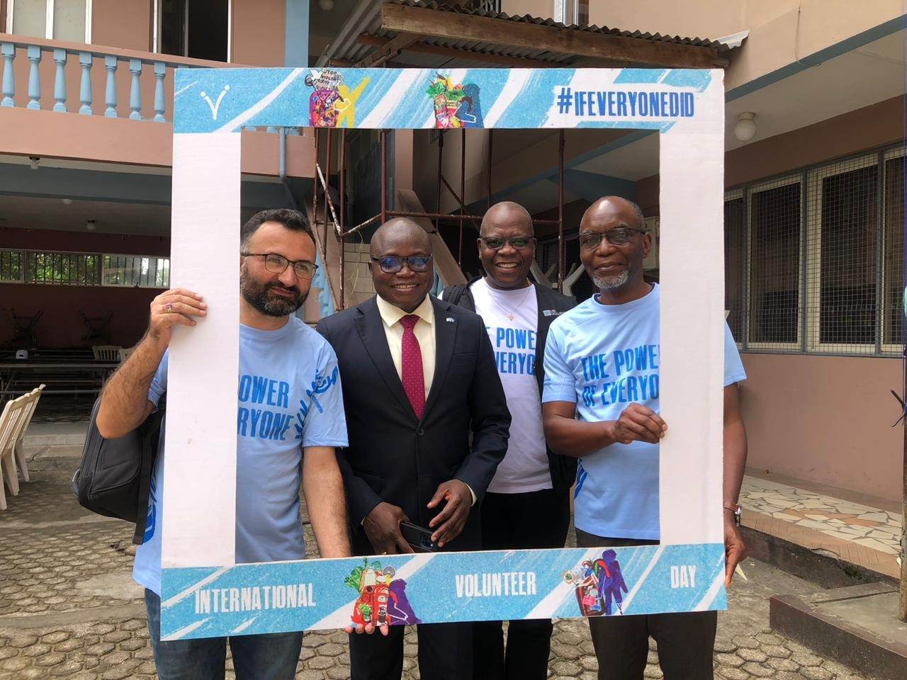
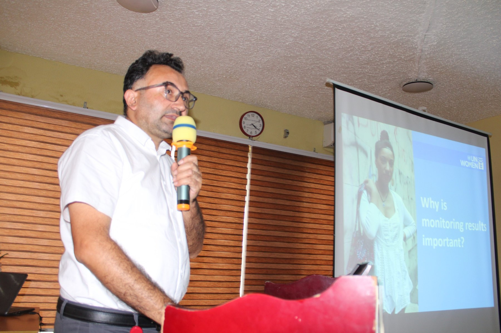
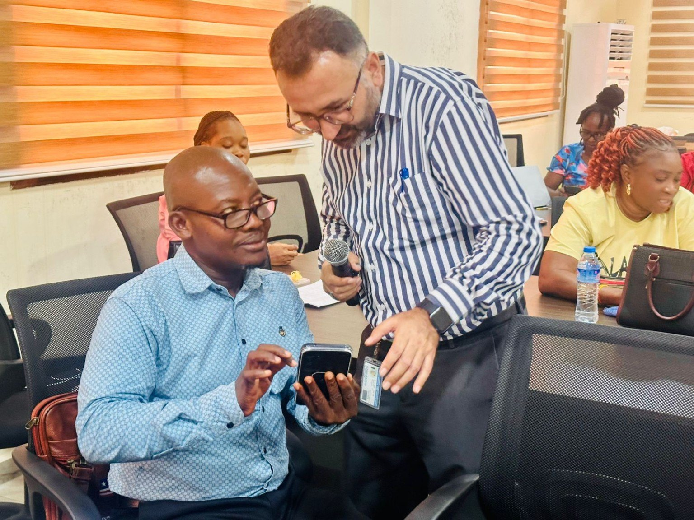
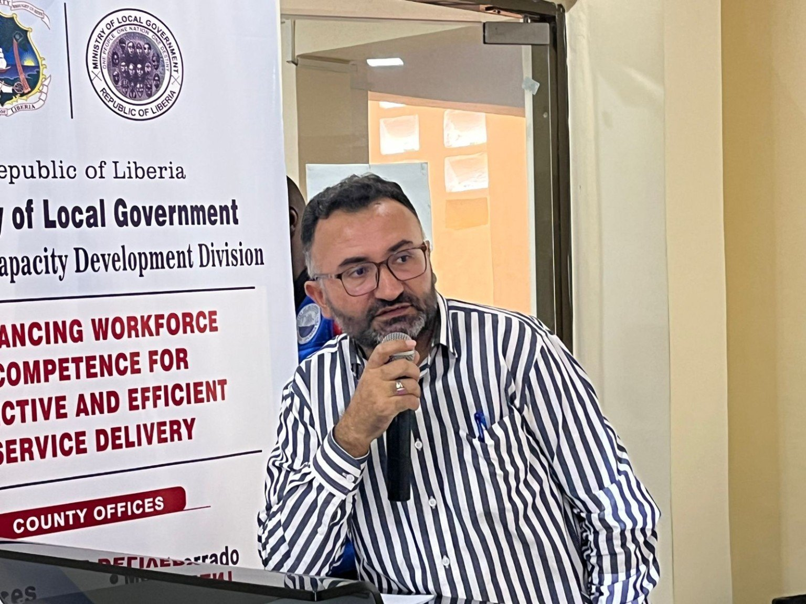

Field Assessment & Community Discussion
Engaging women’s cooperative members during field assessment and evidence collection.
Monitoring, Evaluation & Knowledge Management Specialist
With 15+ years across the UN and international development sector, I use evidence, data and knowledge to support measurable results for gender equality, inclusive development and resilient communities.

Bridging rigorous monitoring, learning and knowledge management with programme strategy, accountability and better decisions.
Results frameworks, indicators, data quality, performance analysis and evaluation support.
Knowledge products, lessons learned, organizational learning and evidence sharing.
Strategic planning, RBM, reporting and translating evidence into actionable programme decisions.
Continuous learning across monitoring, analytics, results and strategic practice.
A path of learning, contribution and impact across development and humanitarian settings.
Monitoring & Evaluation Associate
Monitoring & Evaluation Officer
District Programme Officer
MEAL Officer
M&E & MIS Officer
Monitoring, Evaluation & Knowledge Management Specialist (International UN Volunteer)
Blending data, people and purpose.
Monitoring plans, evaluations, PMFs, indicators and performance measurement.
Learning systems, knowledge products, lessons and evidence sharing.
Excel, Power BI, Tableau, SQL, BigQuery, R, SPSS and digital data tools.
Results frameworks, indicator tracking, targets, reporting and adaptive management.
Strategic Notes, annual work planning, corporate reporting and evidence synthesis.
Partner capacity building, technical support, stakeholder engagement and coordination.
Contributing to gender equality, resilience and inclusive development.
Results framework development, indicators, baselines, milestones, annual targets and performance measurement.
Evidence collection, stakeholder engagement, document review and technical inputs for evaluation management.
Monitoring and evidence support for digital financial inclusion and women's economic participation.
Evidence and monitoring support for women's participation, peacebuilding and community resilience.
Evidence and reporting support for initiatives addressing violence against women and girls and harmful practices.
Monitoring and assessment experience across humanitarian response, resilience and community DRR systems.
Working across programme teams, partners, government, UN agencies and development stakeholders.
RBM, monitoring, indicators, data quality, reporting standards and learning-oriented support.
Experience contributing to UN INFO, UNSDCF reporting, inter-agency coordination and results processes.
Analytical briefs, management reports, dashboards, case studies, lessons learned and knowledge products.
Turning expertise into shared learning across platforms.

Engaging women’s cooperative members during field assessment and evidence collection.

Facilitating RBM learning for WPHF partners in Liberia.

Programme monitoring and stakeholder engagement in the field.

Participating in stakeholder and community-facing engagement activities.

Presenting practical approaches to results monitoring and reporting.

Facilitating learning on why monitoring results matter for programme performance.

Supporting participants through practical technical discussion and problem-solving.

Creating practical spaces for learning, discussion and shared experience.
Engaging women’s cooperative members during field assessment and evidence collection.
Facilitating RBM learning for WPHF partners in Liberia.
Programme monitoring and stakeholder engagement in the field.
Participating in stakeholder and community-facing engagement activities.
Presenting practical approaches to results monitoring and reporting.
Facilitating learning on why monitoring results matter for programme performance.
Supporting participants through practical technical discussion and problem-solving.
Creating practical spaces for learning, discussion and shared experience.
I am particularly interested in practical M&E and knowledge systems that make evidence easier to understand and use.
Turning findings, lessons and programme experience into practical improvements.
Using dashboards, digital data collection and analytics to strengthen monitoring systems.
Supporting evidence-driven programming for gender equality, participation and resilient communities.
Interested in M&E, Knowledge Management, Strategic Planning, Results-Based Management, reporting and data-focused work.
A practical approach to monitoring, evaluation, knowledge management and results-based decision-making.